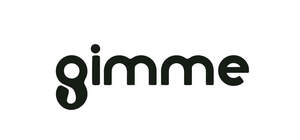

Trade Mark Journal No.2025/028 11 July 2025
UK00004221343 19 June 2025 (28,35)
Mark 1
GIMME
Mark 2

- Class 28
- Sports equipment; Sporting articles and equipment; Articles for playing golf; Bag stands for golf bags; Caddie bags for golf clubs; Club (Golf -) hoods; Clubs (Golf -); Covers for golf club heads; Covers for golf clubs; Covers (Shaped -) for golf bags; Fitted protective covers specially adapted for golf clubs; Gloves for golf; Golf bag carts; Golf bags, with or without wheels; Golf balls; Golf club grips; Golf club head covers; Golf club heads; Golf clubs; Golf flags; Golf gloves; Golf irons; Golf mats; Golf practice apparatus; Golf practice nets; Golf putters; Golf swing alignment apparatus; Golf tee bags; Golf tees; Golfing gloves; Handles for golf clubs; Head covers for golf clubs; Nets for practising golf; Putting practice mats [golf implement]; Shafts for golf clubs; Tools (Divot repair -) [golf accessories]; Trolley bags for golf equipment.
- Class 35
- Providing an online marketplace for buyers and sellers of pre-owned sporting goods and services; Provision of an online directory for buyers and sellers of used sporting goods and services; Provision of an online marketplace for third-party sports equipment and sports apparel; Online retail services in relation to the sale of second-hand or pre-owned sports equipment and sports apparel; Advertising and promotional services of golf clubs, golf equipment; Wholesale services in the field of golf equipment; Retail store services in the field of golf equipment; Mail order store services in the field of golf equipment; Retail and wholesale services and online retail and wholesale services, all relating to articles for playing golf, golf equipment and golf balls.
GIMME MARKETPLACE LTD
Representative: SIRIUS IP